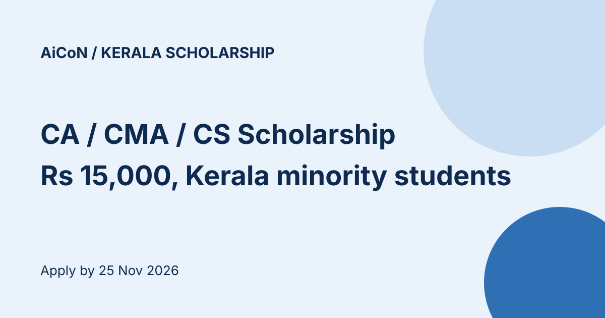

Kerala minority scholarship for CA, CMA and CS students: ₹15,000, apply by 25 November
The Kerala Directorate of Minority Welfare is taking online applications for a ₹15,000 scholarship for minority-community students studying Chartered Accountancy, Cost and Management Accounting (CMA) or Company Secretaryship (CS). The notice is dated 9 October 2026. The online last date is 25 November 2026.

At a glance
- Amount: ₹15,000, paid as one amount
- Who: permanent residents of Kerala studying in Kerala who belong to the Muslim, Christian (all denominations), Sikh, Buddhist, Jain or Parsi communities
- Courses: CA, CMA and CS, for students preparing for the Intermediate or Final exam
- Online last date: 25 November 2026
- Print and documents to the Directorate by: 30 November 2026
Eligibility
- Intermediate students must have passed Foundation, or a degree, with 60% marks. Final students must have passed Intermediate
- Families below the poverty line (BPL) get preference and must attach a ration card copy. If there are no BPL applicants, APL families with annual income up to ₹8 lakh are considered
- The student must have a bank account in their own name in a scheduled or commercial bank
How to apply
- Go to mwdscholarship.kerala.gov.in and choose One-time registration
- Register with name, Aadhaar and phone number, then log in
- Complete the profile (personal, bank and institution details) and add earlier qualifications through Add Qualification
- Choose Apply For Scholarship and pick this scholarship
- Upload photo, signature, SSLC certificate, income certificate, bank passbook, Foundation or Intermediate pass certificate, fee details and registration details, then submit
- Check the status under Submitted Applications
Documents for the printed set
- Online registration printout
- Mark lists (SSLC, Plus Two or VHSE, degree)
- Foundation or Intermediate pass certificate, and proof of the current course (admission card, fee receipt, ID card)
- First page of the student's bank passbook, and bank details checked by the student. A wrong bank detail leading to rejection is not the department's responsibility
- Aadhaar copy, nativity certificate, community or minority certificate, village-office income certificate, ration card copy
Send the printout and documents to: Directorate of Minority Welfare, 4th Floor, Vikas Bhavan, Thiruvananthapuram 695033, by hand or post, by 30 November 2026. Only complete applications are considered. Helpline: 0471-2300523, 0471-2300524.
We read the portal home page and the 3-page notice (a Malayalam PDF, read as page images) on 14 October 2026. We did not register or open the application form.
Sources: Minority Welfare scholarship portal, Notice for CA/ICWA, CMA and CS scholarship 2026-27 (PDF). Checked 14 October 2026. This is an AiCoN explainer, not a government publication.